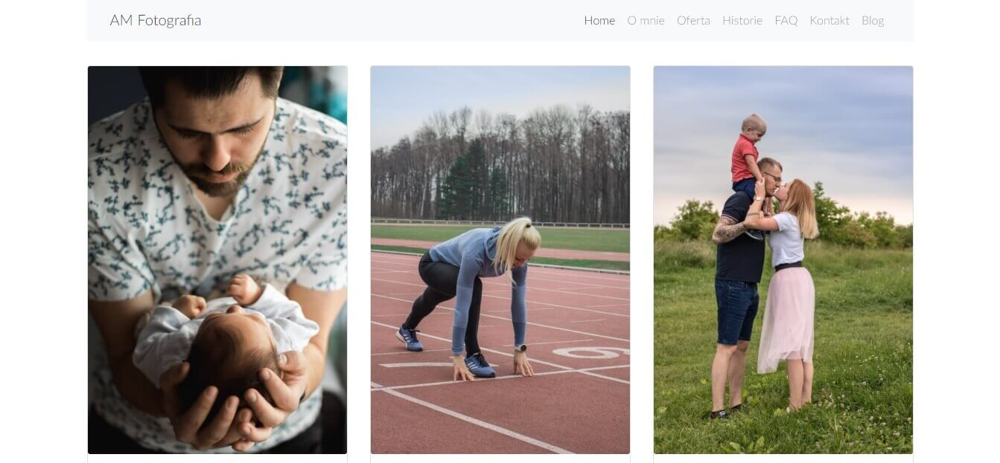

Projekty
Znajdują się tutaj tylko projekty wykonane całkowicie przeze mnie. Dlatego pominąłem wszelkiego rodzaju todolisty, kamień papier nożyce i podobne projekty wykonane na kursach. Więcej projektów możesz znaleźć na moim Github-ie.
Punktator
Mój największy projekt. Strona służy do zapisywanie wyników gier planszowych. Ciągle go rozwijam, natomiast podstawowa wersja już działa.
Technologie


Aleksandra Matejko Fotografia
Strona wizytówka fotografa rodzinnego. W tym projekcie odpowiadałem za wszystko, od projektu, po kupno domeny oraz wrzucenie projektu na hosting.
Technologie


Restauracja Pyszna
Strona fikcyjnej restauracji. Napisana całkowicie w HTML i CSS. Do wyświetlania galerii użyłem light-boxa. Jest to pierwszy większy projekt, który zrealizowałem.
Technologie

Marcin Matejko

Strona na której właśnie jesteś. Zamysł był taki, żeby strona była prosta, przejrzysta i zbudowana bez użycia frameworka.
Technologie